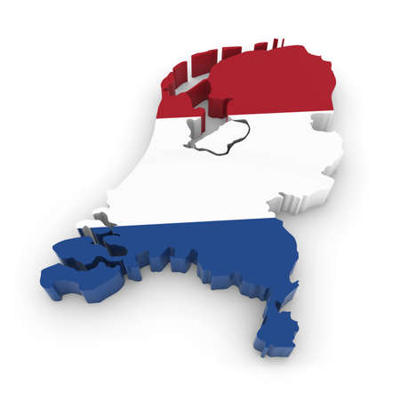

Nombre: 6
Les pays: La Belgique, le Danemark, les Pays-Bas, l'Espagne, la Suède et le Luxembourg
Mais parmis celles-ci, nous allons voir celle des PAYS-BAS.

Aux Pays-Bas, nous avons une démocratie parlementaire ainsi qu'une monarchie constitutionnelle.
Les citoyens choisissent donc qui les représente au Parlement et le statut du Roi est consigné dans la constitution.
La Monarchie parlementaire est un régime politique dans lequel, un monarque partage le pouvoir avec un parlement (ensemble de personnes élues par le peuple pour les représenter). Le Parlement détient le pouvoir législatif, celui de faire des lois.
Les Pays-Bas n'ont pas toujours eu une monarchie parlementaire.
Constitution actuellement en vigueur: Depuis 1815
Début de la Monarchie: 1815
Avant cela: République de 1581 à 1806 et occupés de 1806 à 1815 par la France.
Il y a donc eu 7 monarques jusqu'à présent. Le monarque actuel étant le roi Willem-Alexander depuis 2013.
Nous avons donc dans l'odre chronologique :
Guillaume Ier | Règne de 1815 à 1840
Guillaume II | Règne de 1840 à 1849
Guillaume III | Règne de 1849 à 1890
Wilhelmine | Règne de 1890 à 1948
Juliana | Règne de 1948 à 1980
Beatrix | Règne de 1980 à 2013

Guillaume-Alexandre| Règne de 2013 jusqu'à aujourd'hui
Il faut que 3 conditions soient réunies afin de pouvoir voter aux parlementaires.
Sachez que ce vote n'est pas obligatoire et que vous pouvez vous porter candidats dès l'âge de 18 ans.
Qui l'applique ? C'est le gouvernement.
Qui est le reponsable pénal du pays ? C'est également le gouvernement.
Qui préside le gouvernement ? C'est Mark Ruttedu, l'actuel Premier Ministre faisant membre du parti du VVD.
Qu'est-ce que le VVD ? VVD veut dire "Volkspartij voor Vrijheid en Democratie". Cela équivaut au Parti populaire pour la liberé et la démocratie en France.
Qui l'applique ? Ce sont les Etats généraux. (L'équivalent du parlement en France)
De qui sont composés les Etats généraux ? La Seconde chambre (= Parlement en France) qui est la chambre basse et la chambre la plus haute qui est la Première chambre (= le Sénat en France)
Qui compose la Seconde chambre ? 150 membres élus au suffrage universel direct et au scrutin proportionnel plurinomial
Qui compose la Première chambre ? 75 membres élus au suffrage universel indirect depuis les 12 provinces et les 3 états insulaires qui sont Curaçao, Saint-Martin et Aruba.
Notez tout de même qu'elle ne peut qu'approuver ou rejeter un texte de loi mais ne peut pas l'amender.
Et le roi dans tout ça ?🤔 Le roi dispose d'un rôle législatif grâce à la "signature royale", sans laquelle, aucune loi ne peut être validée.
Maintenant, nous allons faire un petit QCM pour voir si vous avez bien suivi.